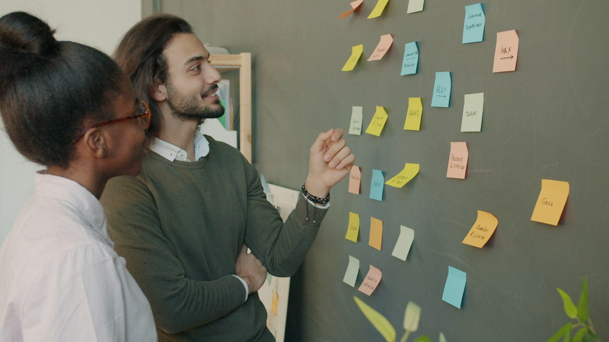

Succession & Internal Mobility Design
Make better decisions about who is ready for what comes next.
Most organizations have talented people. The challenge is recognizing what they are ready for, whether that means a promotion, a move into another function, or a different role at the same level. Leaders need shared criteria, credible evidence of capability, and a consistent way to make those decisions.
Corework helps organizations define readiness and strengthen the processes behind succession, promotion, and internal moves. The work makes it easier to identify where people can contribute next, what they need to develop, and where the organization needs to build its talent pipeline.

When talent decisions become difficult to trust.
The succession process may exist, but leaders use different definitions of “ready.” The same names appear year after year. Development is not clearly connected to future roles. Promotion and mobility decisions depend too heavily on individual judgment or advocacy.
This engagement may be a fit when:
- Leaders use different standards to decide who is ready for a promotion or a new role
- Succession slates repeatedly surface the same people while other capable employees remain overlooked
- The organization struggles to identify employees whose capabilities could transfer to another team, function, or role
- Development plans are not clearly connected to the roles and opportunities people could move into next
Built on decisions you can trust.
Corework examines how readiness and advancement decisions work today: what leaders say they value, what evidence they actually use, and how succession, promotion, and mobility decisions get made in practice.
- 01Define Readiness
- 02Test Current Decisions
- 03Redesign the Process
- 04Connect Readiness to Development
From there, we work with leaders to strengthen the system underneath those decisions.
The goal is a clearer, more consistent way to determine who is ready, what evidence supports that judgment, and what people need to develop before taking on greater responsibility.
Depending on the scope of the engagement, Corework helps the organization develop:
The result is a more consistent basis for deciding who is ready now, who could move with targeted development, and where the organization needs to build capability.
Get the Succession & Internal Mobility Design brief.
The detailed product brief goes deeper into the Corework approach, engagement structure, potential deliverables, and what a full engagement can look like.
Start with the decisions you need to trust.
Bring us the talent-pipeline challenge you are seeing. We'll start there.